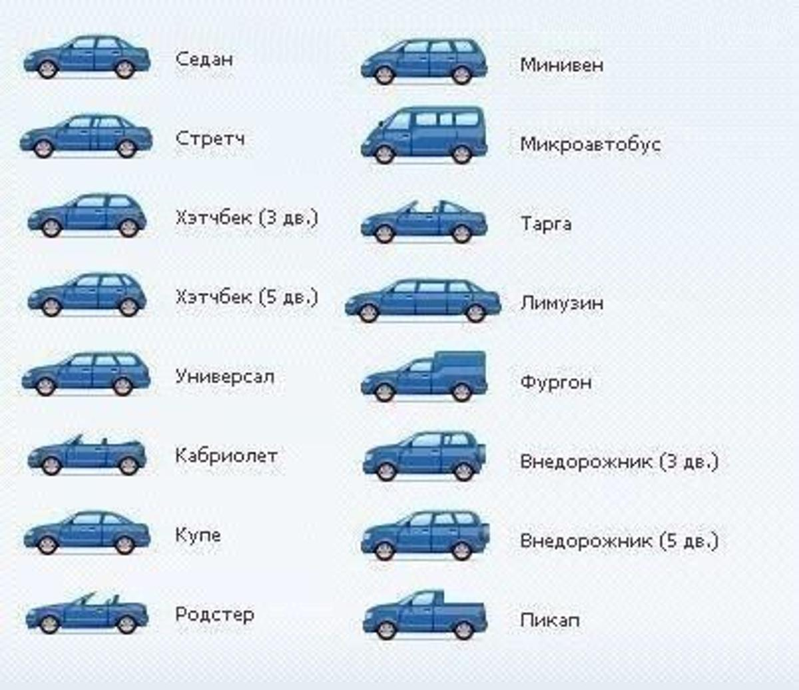
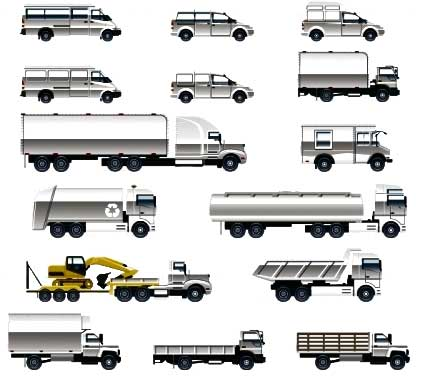
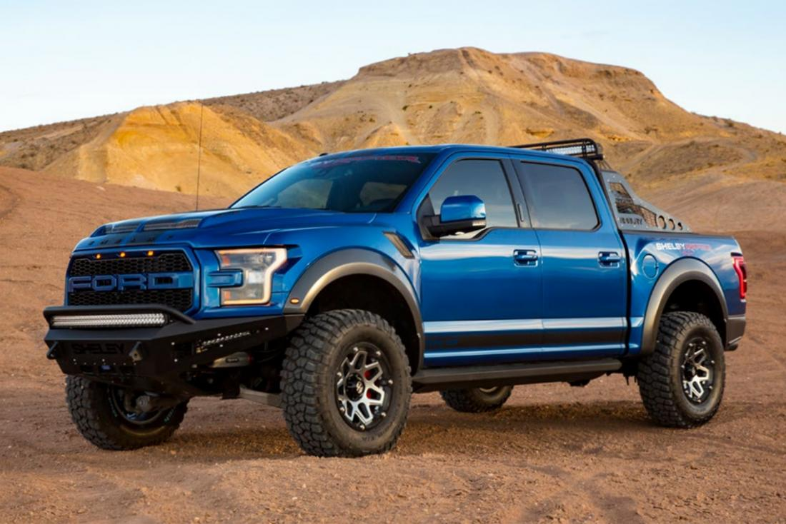
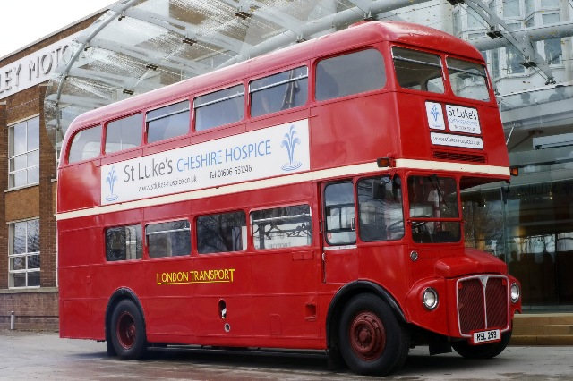
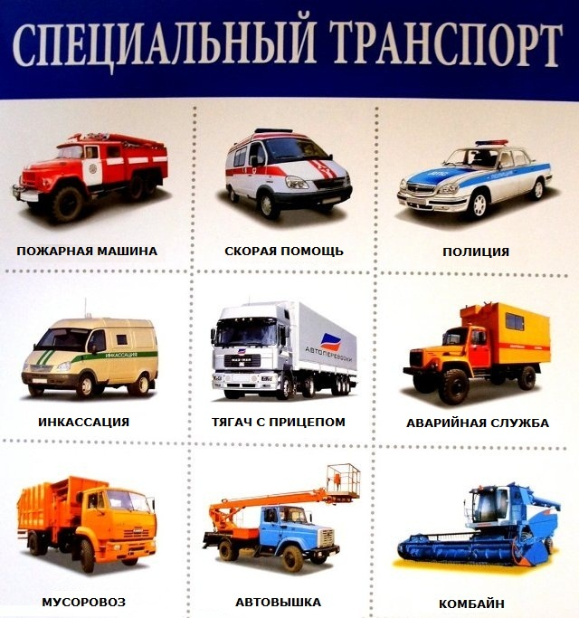

|
Легковые машины В числе легковых автомобилей — машины, перевозящие пассажиров (до 8 человек) или негабаритные грузы, а также спецавтомобили (буксировщики и пр.). Внутри этой категории также существует классификация по типу кузова, его габаритам, объему и мощности мотора и другим параметрам. Наиболее часто для определения типа легкового авто используют европейскую систему. В основу европейской классификации положено разделение машин по габаритам. Все автотранспортные средства получают буквенное обозначение. |
 Все типы легковых авто |
|
 Виды грузового транспорта |
Грузовые машины Различают три основные группы грузовых машин: Бортовые — к ним относятся грузовые фургоны. Специализированные — самосвалы, рефрижераторы, балластные и седельные тягачи, контейнеровозы. Автоцистерны. Помимо этого, классификация грузовых авто выполняется по типу кузова, грузоподъемности, количеству осей и т.д. |
|
Грузопассажирский транспорт К ним относят автомобили, сконструированные: на базе легковых моделей — микроавтобусы, минивэны, пикапы; на базе грузовых моделей — вездеходы, «вахты», автомобили спецназначения. Минивэн — сочетание небольшого автобуса и легковушки. Основные приметы: короткий капот, просторный пассажирский отсек с тремя рядами сидений и высокие потолки. Микроавтобус — транспорт для перевозки 8 и более пассажиров. Длина кузова обычно не превышает 5 метров. Пикап — симбиоз легковушек и грузовых автомобилей. Полный привод, повышенная проходимость и возможность транспортировки крупных грузов делают эти машины незаменимыми для фермерских, лесных и других хозяйств. |
 Пример пикапа |
|
 Двухэтажный автобус |
Автобусы Автопарк автобусов насчитывает самые разнообразные модели, которые создавались с учетом особенностей эксплуатации. Есть автобусы туристические, школьные, пригородные, междугородные, двухуровневые и одноуровневые городские, автобусы для перевозки пассажиров в аэропортах, перронные и другие. |
| Спецтранспорт К этой категории автомобилей относятся автокраны, автолавки, строительная техника, гоночные машины, амфибии. Также в эту группу входят машины скорой помощи, бронированная автотехника, катафалки, агрегаты для уборочных работ и т.д. |
 |